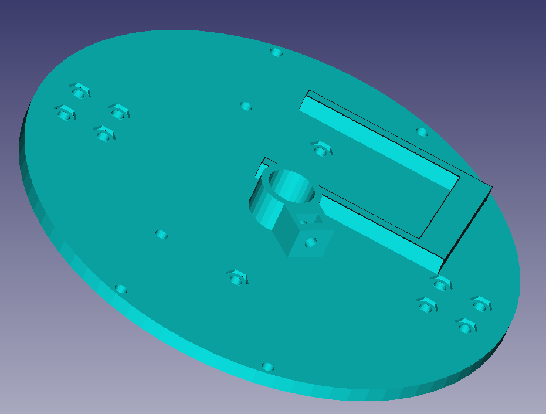

Archivos en FreeCAD
Descarga aquí los archivos en FreeCAD
| Imagen | Archivo CAD | Comentario |
|---|---|---|
| Ballcaster | Proporciona un soporte al Rupertobot, intentando reducir el rozamiento con el suelo al mínimo | |
|  | Plataforma inferior | Incorpora un sistema de sujeción para bolígrafo o rotulador |
 |
Plataforma superior | Tiene pendiente alguna señal que mejore la orientación a la hora de montarlo sobre la plataforma inferior |
| Columna | Une las plataformas superior e inferior con un ingenioso (a mí me lo parece) sistema de tornillos y tuercas (Necesitas imprimir seis) | |
| Rueda | La rueda es la del Masaylo (que para eso lo diseñé yo, aunque me ayudaron los compis del Club de Robótica de Granada). En realidad, te sirve cualquier rueda del Escornabot |